缩放定律是LLM开发流水线的关键组件，最著名的是作为预测训练决策的方式，例如「计算最优」地权衡参数量和数据集大小，此外还有一系列日益增长的其他关键决策。
在这项工作中，我们问：计算最优缩放行为是否可以随技能而变化？具体地，我们考察知识型和推理型技能，如基于知识的QA和代码生成，我们对这个问题给出肯定回答：缩放定律是技能相关的。
接着，为理解技能相关缩放是否是预训练datamix的伪影，我们做了不同datamix的广泛消融，发现即使在纠正datamix差异后，知识和代码在缩放行为上仍表现出根本性差异。
我们以一个分析收尾：我们的发现如何关联使用validation set的标准计算最优缩放。发现一个misspecified validation set可以影响计算最优参数计数近50%，取决于其技能组成。
缩放定律既用于预测早期预训练决策的性能，也用于在给定计算预算下决定参数与预训练数据集大小的最优权衡，在LLM发展中扮演重要角色。
著名的是，Hoffmann et al. 2022用不同数据/参数权衡的一系列实验表明先前的LLM都偏向参数过多，引发训练token量的转变。更近的Dubey et al. 2024不仅用缩放定律决定给定计算预算的最优参数计数，还用其预测数据选择决策对评估分数的影响。
在这些工作中，计算最优（CO）：描述最优参数计数和训练token数：基于聚合性能估计器（APE）选择，形式是对非预训练语料validation set的负对数似然（NLL）。
然而关于单个技能的CO是否与这些APE CO对齐，如数学推理、问答（QA）或编码，我们所知甚少。一些研究用缩放定律预测下游任务性能如何随规模改善，但没有覆盖CO本身是否可能技能相关。
是否可能有些技能更「数据饥饿」，而其他更受益于「额外参数」？如果是，那应如何影响模型训练和训练数据选择？
本文用跨9个不同计算规模、2个技能、2个split的19个数据集测量的广泛实验研究这一点。我们聚焦三个研究问题：
R1. CO是否技能相关？先考虑给定规范datamix，code和knowledge技能的IsoFLOP曲线及对应CO与APE CO的比较。整体上我们发现这些技能CO之间的显著差异：知识QA任务容量饥饿，代码任务偏好数据。
R2. 这是预训练datamix的伪影，还是代码和知识技能根本不同？仅用最小计算规模，我们考察这些差异是实验预训练datamix中技能相关数据比例的结果，还是不同技能在数据/容量饥饿上确有差异。我们发现两者都对：改变技能相关数据比例会移动该技能的CO，但即使技能特定数据比例相当，技能CO仍有差异。
R3. 技能相关CO的存在如何影响LLM训练？最后聚焦更实际的问题：这些发现应如何影响模型预训练。首先再次仅用最小计算规模，考察是否可能「对齐」两技能CO。发现可以，但这是否应被认为对整体模型训练有利高度取决于validation set的选择。然后考察估计最优参数计数多大程度依赖validation set选择。发现最小规模实验（6×10¹⁸）中，同一技能的最优参数计数跨datamix变化近50%、跨validation set变化超30%。更大尺度差异更小，但三个最大计算规模仍超10%。
计算缩放定律时，先前工作通常建模validation set上的损失，通常是来自与预训练数据集同分布的通用文本语料。该设置下损失有效是模型训练期间应学的所有东西的加权组合。相反，我们考虑技能相关缩放定律。
神经缩放定律旨在建模损失作为FLOPs计算规模的函数。FLOPs常估计为B≈6pt，包含训练集大小t（token）和模型参数量p的贡献。通常建模这两个量与损失关系的缩放定律展现出参数量与计算规模之间的权衡。这些用IsoFLOP曲线描绘：x轴参数量，y轴训练或validation集损失。
Hoffmann et al. 2022开创用2D power law模型，有参数和token计数的独立power law分量。我们发现2D power law对下游评估拟合差，归因于噪声和小数据集大小（对比validation set）。我们改用Dubey et al. 2024的方法：对每个计算规模拟合独立的二次多项式，并扩展到对计算规模的最优点拟合power law。
IsoFLOP曲线的核心是IsoFLOP groups：在固定计算规模下建模数据集和模型大小权衡。即一个IsoFLOP group是一组模型，其训练数据量t和模型大小p在固定近似计算预算B≈6pt下变化。
数据集大小与参数量的权衡可在每个计算规模优化，意味着给定计算预算存在最优参数量和数据集大小。通常IsoFLOP曲线（因此CO）用训练集损失计算，或为灵活用validation set。由于训练和validation集都包含可能不同影响缩放行为的混合数据，我们称这些损失为聚合性能估计器（APE）。此术语下，标准实践涉及基于APE选择CO。
接下来定义我们的技能概念以及分析如何涉及基于技能而非APE的CO。
沿用Chen et al. 2023，我们从可量化技能的指标和数据集形式化「技能」概念。更精确地，若模型在数据集D上按指标L的性能与模型执行目标技能s的能力相关，则称数据集D量化技能s。
该定义下，多个数据集可关联同一技能：实验中我们利用这点跨多个数据集验证结论：某些情况下一个数据集可量化多技能。难以精确标注不同数据集量化什么技能、其正确程度可争论，所以我们大体遵循评估数据集创建者的标注，但审慎对待。
为简洁，我们聚焦两个怀疑有不同缩放属性的技能：knowledge（基于知识的QA）和code。
技能相关CO：给定定义，技能s在计算规模B的CO由IsoFLOP group中优化量化该技能的数据集D_s损失的参数量p*_s和训练token预算t*_s给出，而非APE。如前述，我们工作的主要目标之一是确定CO是否技能相关。
为量化，我们考虑技能CO与用APE计算的最优比较。若技能以相对更多「数据」表现更好，称该技能数据饥饿；若偏好比APE最优更多参数，称容量饥饿。
实验中我们聚焦两个总体技能：knowledge QA和code。对每个技能我们确定若干评估数据集，分成「hypothesis」和「held-out」split。分析中我们先在hypothesis split上形成假设而不访问held-out split，然后在held-out split上验证假设。
hypothesis和held-out split包含知识QA split：Trivia QA、NQ、SQuAD、MMLU；代码split：RepoBench、SWE-Bench、BigCodeBench、CAT-LM、CrossCodeEval、MultiPL-E、HumanEval、MBXP、MBPP。
一些数据集是跨多主题的复合数据集（如MMLU）。我们分别分类这些子任务，各分配一半到hypothesis和held-out split。若模型需先验知识才能准确回答问题，我们标注子任务为知识型，并移除所有非知识型子任务。
预训练数据：我们的规范预训练datamix约58.4% 文档高事实知识、19.9% 代码、剩余21.7% 不属于任一类别。对给定token预算t，按各类别比例从更大数据池随机采样文档构建训练集。在第4.2/4.3节我们通过增加代码或知识比例改变这些比例。
首先考虑规范datamix下不同技能CO的差异。
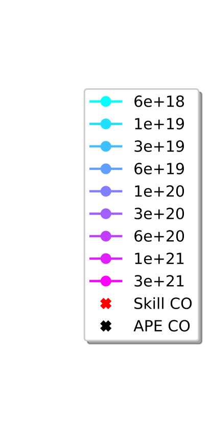
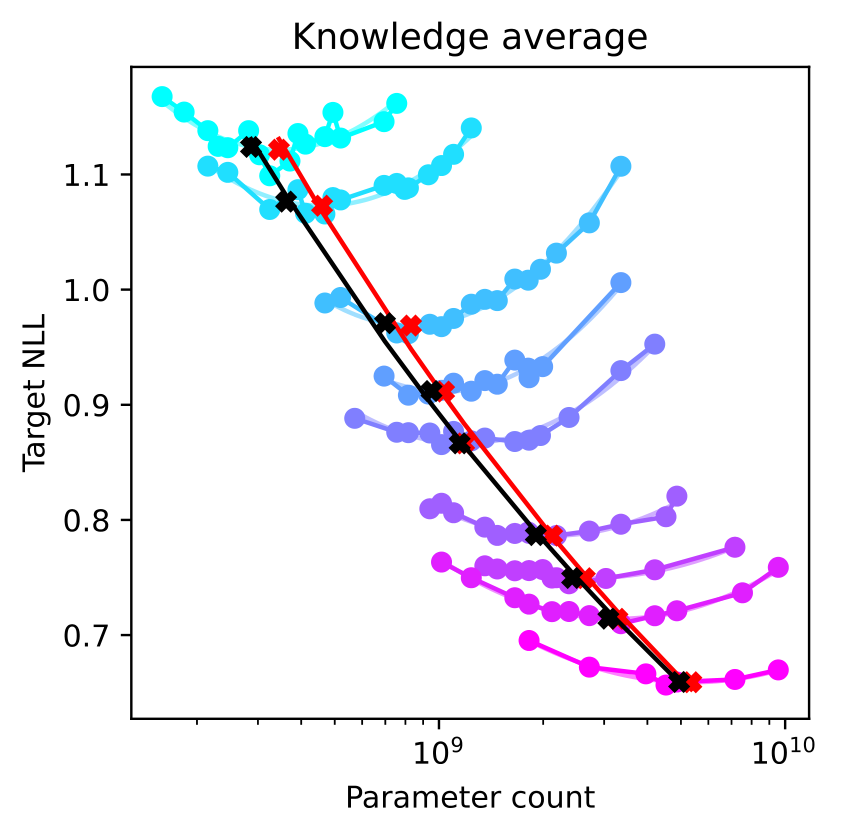
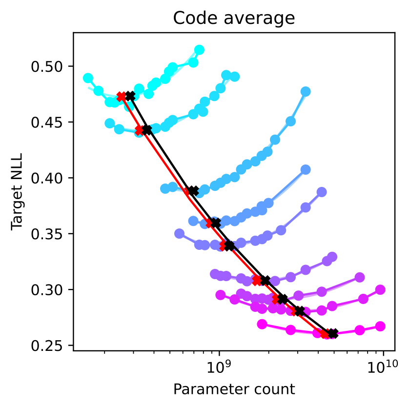
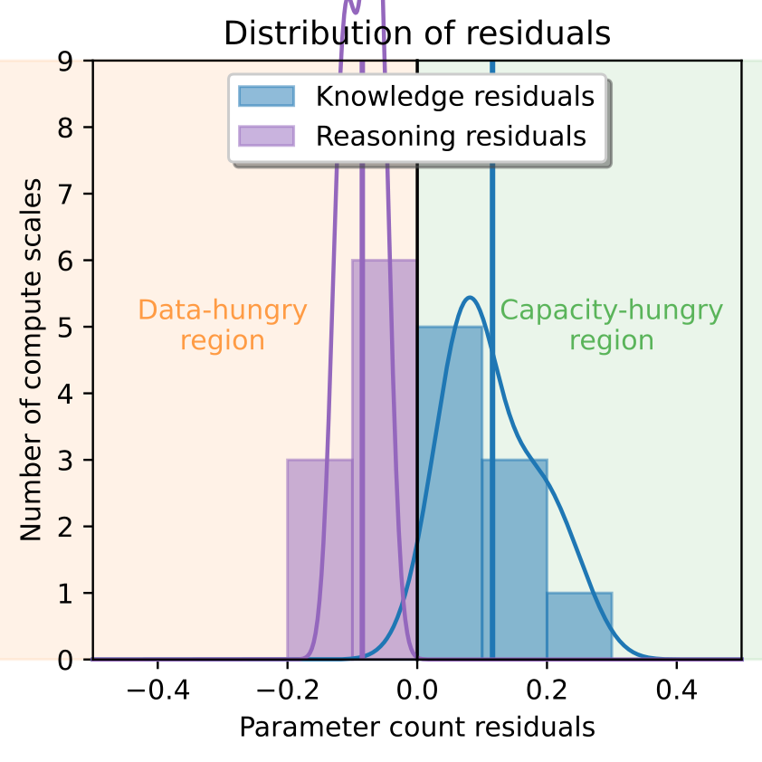
方法：大致沿用Dubey et al. 2024，我们训练计算预算在6×10¹⁸ 到3×10²¹ FLOPs之间的模型。每个计算规模预训练40M到8B参数的模型。用这些模型，按第2.1节方法计算APE（validation loss）和两个技能的IsoFLOP曲线及对应CO（由目标答案的NLL度量）。为比较，先从Dubey et al. 2024的power law拟合获得每个计算规模的APE CO参数计数p_c。然后对技能s的每个数据集D，拟合每个计算规模的二次多项式并识别p_s的最优参数计数。把APE CO投影到s的多项式拟合上，对APE CO和技能依赖CO拟合power law曲线。所有实验中我们先分析hypothesis split结果，在held-out split确认发现。
结果：分别对held-out code和knowledge QA数据集显示平均结果（红色），叠加Dubey et al. 2024报告的APE CO曲线（黑色）。图清晰显示knowledge QA与code的差异：knowledge QA相对APE曲线偏好容量：尤其较低计算规模：而code倾向更数据饥饿。该模式在hypothesis split的所有数据集和held-out split都存在。
为跨规模更显式展示模式，考虑参数量「残差」分布：APE最优与每个技能技能最优之间log尺度差异。若计算规模B残差大于0，称该技能在B容量饥饿；小于0则数据饥饿。结果分布确认先前观察：code的参数量残差相对knowledge QA明显左移，指示后者更容量饥饿。同一模式在hypothesis和held-out split的所有数据集成立。这强有力支持知识QA与code的CO有差异，且是可泛化现象。
规范datamix下我们看到知识QA和code数据集在其各自容量/数据饥饿上的清晰差异。但第一个实验不清楚的是：这些差异是技能根本差异的结果，还是规范datamix中这些技能数据量的差异。
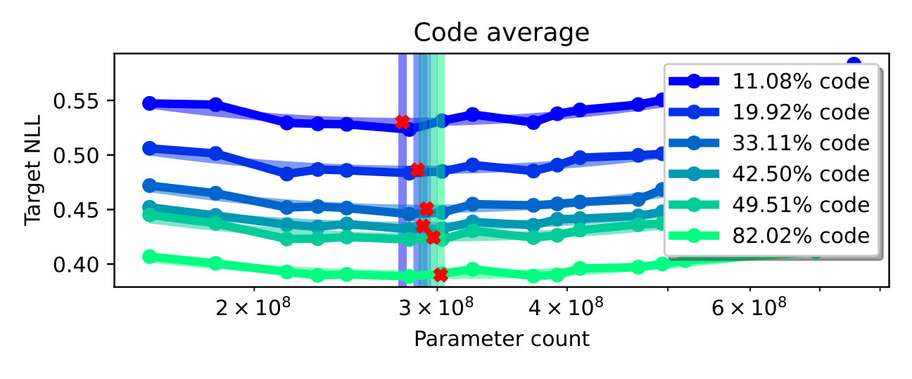
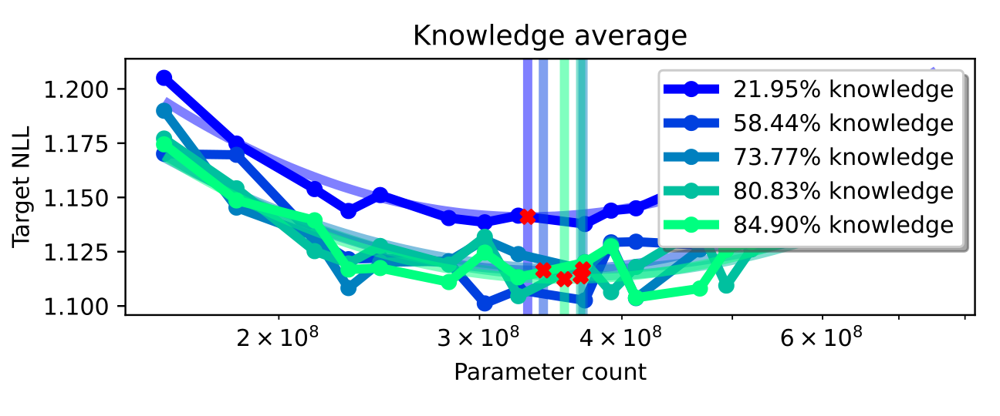
方法：为开始回答，先考察是否可通过改变该技能相关数据比例「移动」技能CO。从规范数据集比例出发，为knowledge创建四个额外数据集、为code创建五个额外数据集，上/下采样技能相关数据比例。具体地，knowledge从原58% 缩到22%、增到85%；code从原20% 缩到11%、增到84%。用这些新datamix训练16个模型，每个6×10¹⁸ FLOPs预算（IsoFLOP曲线代表的最小计算规模），重算该计算规模的技能CO。
结果：展示code和knowledge held-out数据集结果。不出意外，增加技能相关数据（图中更浅色）改善该技能性能。增加代码数据改善code数据集损失超出规范datamix的下一个计算规模。该模式对code比knowledge清晰得多。我们假设因为code数据点易识别且只含代码，而知识数据集通常更分散、更难自动标注。
与我们的研究问题更相关的是不仅损失、CO也移动。再次对code尤其清晰，hypothesis和held-out集都是：包含更多code数据，CO越容量饥饿。这暗示datamix技能比例与CO的根本关系：对固定计算预算，若技能数据需求通过增加其datamix比例满足，我们可以用更少数据训练更大模型。
然而我们想评估知识和代码的容量/数据饥饿是规范datamix的伪影还是更根本的现象。为此用相同数据考察知识QA和code的数据饥饿，独立于技能相关数据比例。做法是绘制每个技能的CO参数计数作为技能相关数据比例的函数。
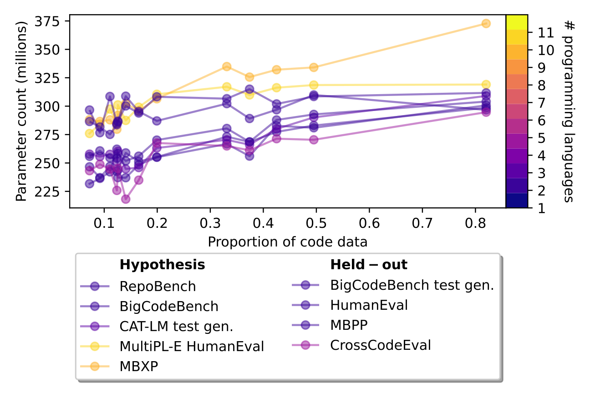
同一图中展示knowledge QA和code。坐标轴对齐到技能相关数据比例，而非datamix本身。对知识QA数据集（紫色线），x值0.4对应40% 知识的datamix；对code数据集（绿色线），对应40% code的结果。
从图清晰可见即使纠正技能相关数据比例，knowledge仍明显比code更容量饥饿，且随技能相关数据比例增加其容量饥饿增长更快。我们假设这一现象：展示知识QA与code的根本差异：与知识比代码更难压缩有关，memorize事实需要更多容量。
与假设一致，仅考虑Python代码数据集时观察到知识/代码更大差异。我们假设此规模的模型可能无法成功压缩「低资源」编程语言，需进一步研究确认。
还看到量化code的数据集损失值整体低于知识QA：尽管知识比例大：可能暗示code的「不可建模熵」比知识低。
经验上展示并考察了技能相关CO的存在后，我们探索这些发现对预训练LLM的实际影响。聚焦两个可在计算预算内可行测试的具体问题：
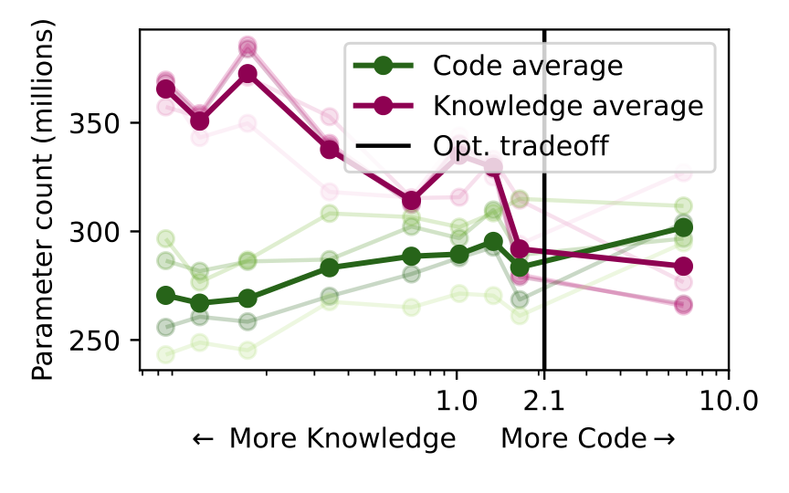
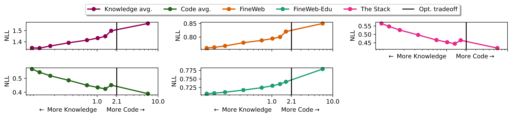
能否通过数据选择对齐技能CO以改善validation loss？
validation set测量错误技能时对参数计数的影响是什么？
对齐技能CO：鉴于知识相关技能CO更容量饥饿而代码相关技能更受益于数据，我们问能否通过移动datamix使两技能CO对齐来改善模型整体聚合性能。
绘制6×10¹⁸ 模型的最优参数计数。确实存在代码和知识最优参数计数大致匹配的点：即code数据约2.1倍于knowledge数据时。我们通过计算hypothesis集交叉点并叠加到held-out split获得2.1。这与先前结果一致：加更多code数据，code CO逐渐转向参数饥饿；减少knowledge数据量，knowledge CO要求更少参数。
接着看该权衡如何影响validation loss（聚合模型性能指标）。理想上用Llama 3 validation set做分析，但其细节未发布。作为替代从三个公开预训练数据集采样不同validation集：FineWeb、FineWeb-Edu（教育网页过滤）、The Stack（代码预训练）。各随机抽取20K样本。
显示所有validation集的NLL。第一个惊人观察是所有选择的validation集都紧贴knowledge QA或code之一：FineWeb和FineWeb-Edu的损失随code数据量单调增加，The Stack相反。我们未看到validation集中知识QA和code混合的证据（本可能呈现U形曲线，而非我们观察的单调增减曲线）。因此这些validation集都不会产生与两个技能对齐的CO。这个结果暗示对齐技能间CO是可能的，实践上应做以平衡期望技能。
最后更显式研究预测CO的预期变化如何取决于validation set选择。
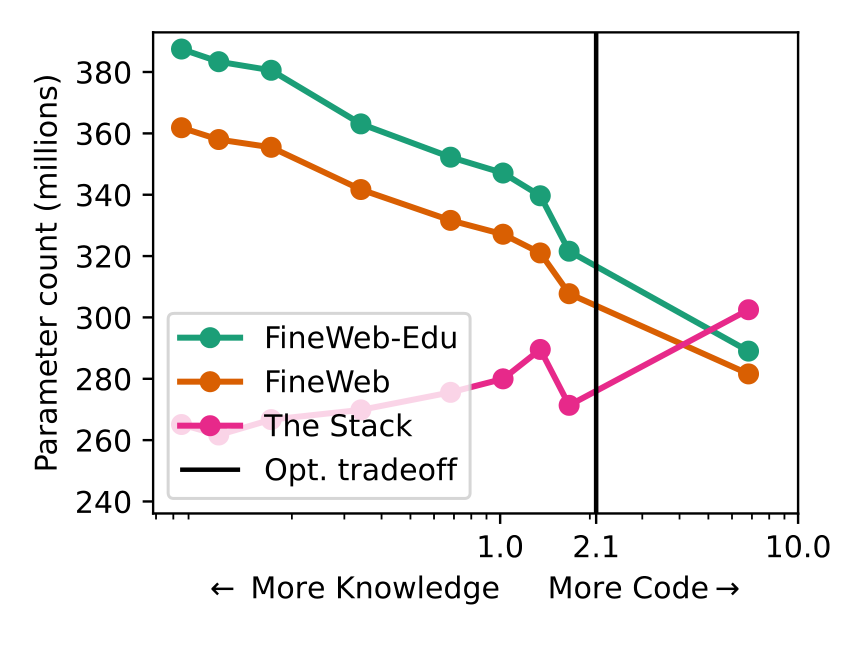
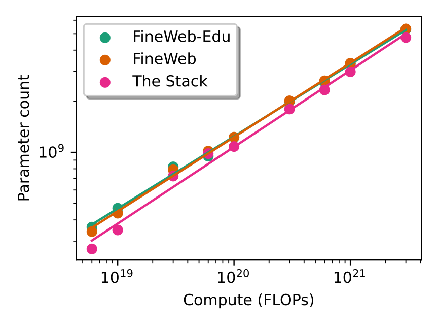
以The Stack validation set为「baseline」，某些datamix的最优参数计数偏差近50%。最小计算规模、规范datamix下，不同validation set间最优参数计数差异超30%。更高计算规模相对差异没那么悬殊，但三个最大计算规模仍超10%。
这个实验说明：选择能充分代表最终模型应捕获混合内容的validation set：或甚至更直接测量那些技能、如我们的工作的validation set：对找到正确CO至关重要。差异在较小规模更明显，但在实验的最大计算规模仍持续存在。
另一方面，Dubey et al. 2024指出高计算规模IsoFLOP曲线更平坦，模型容量与数据集大小的权衡可能没那么重要。他们另一结果用损失拟合sigmoid估计准确率。若把sigmoid应用到整个IsoFLOP曲线产生准确率而非NLL的IsoFLOP曲线，我们假设低计算规模在sigmoid平坦区、高计算规模在线性区时曲线可能看起来「不那么平坦」。我们把这个有趣问题留给未来工作。
我们用9个计算规模、19个数据集、两个split的广泛实验研究计算最优缩放是否技能相关，并给出肯定回答。
首先，规范datamix下技能CO明显不同：知识QA偏好容量，code偏好数据。其次，用datamix比例消融，我们发现两者都对：改变技能相关数据比例移动该技能CO，但即使技能特定数据比例相当，技能CO仍有差异：一个展示知识QA与code根本差异的发现。
最后，聚焦这些发现对模型预训练的影响。我们发现对齐技能CO是可能的，但价值高度取决于validation set选择；misspecified validation set可让最优参数计数偏差近50%，取决于其技能组成。选择能代表最终模型应捕获技能的validation set对找对参数计数至关重要。
参考：https://arxiv.org/html/2503.10061v3